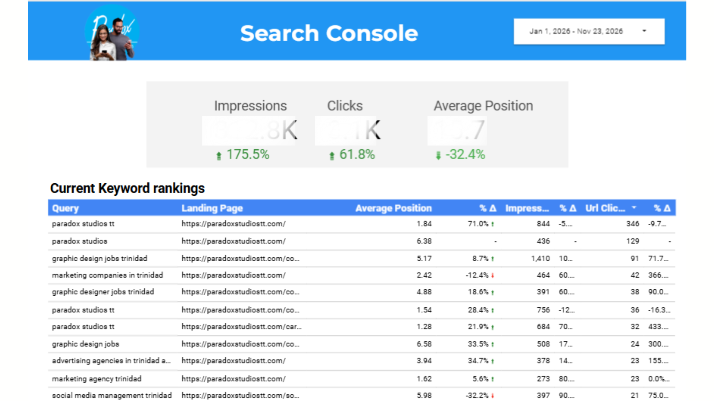
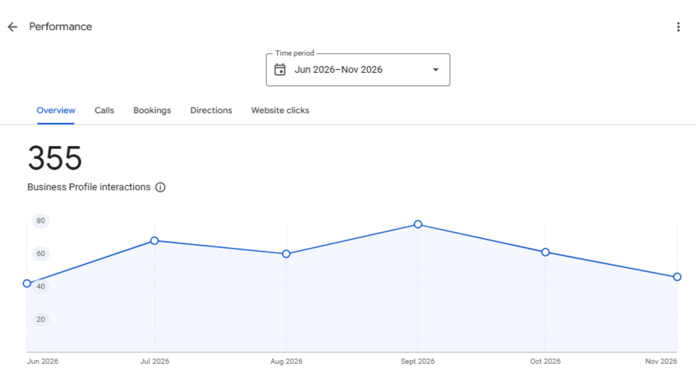

How a B2B agency site turned organic search into enquiries, calls and AI citations
Our own agency website is a B2B site, so it gets the same treatment we give clients. Here is what a content network built for search, AI answers and tracked conversions did for it.
350%more website traffic
175%more impressions
62%more clicks
32%better average position
The challenge
The site competes for service searches like marketing and advertising agencies in Trinidad, plus careers searches, with no paid ads behind it. Every visit had to be earned, and every enquiry had to be traceable back to the page that produced it.
What I did
Built a connected content network around service, location and careers searches, so each search intent has its own page.
Structured key pages with direct answers and clear entities so AI tools can quote them.
Tracked calls, form entries and direction requests in GA4 and Google Business Profile, so content is judged by enquiries, not just visits.
Reported monthly in Looker Studio and used ranking changes to decide what to refresh next.
The results
Traffic, impressions and clicks all grew year to date, with average position improving by about a third.
Brand and core service searches now sit at or near the top of page one.
Hundreds of tracked calls, form entries and direction requests, with steady monthly activity.
Citations in ChatGPT and Google AI Overviews.

Search Console dashboard in Looker Studio: impressions up 175.5%, clicks up 61.8%, average position improved 32.4%, with the keywords driving it.

Google Business Profile interactions (calls, directions, website clicks and bookings), June to November 2026.